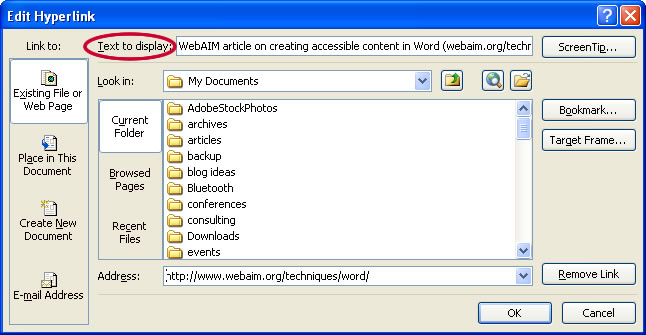

How to make "accessible" pdf's
Accessibility requirements for websites are mandated under government policy, legislation, and through whole-of-government commitments. Under the Disability Discrimination Act 1992 agencies must ensure that people with disabilities have the same fundamental rights to access information and services as others in the community. This brief introduction will explain more:
In order to make a document accessible for individuals who are blind, have a visual impairment, or a learning disability, you must follow these seven steps to making all document accessible before publishing it to a PDF. A PDF by default is not necessarily accessible. A scanned or poorly constructed PDF's will cause unnecessary angst for individuals accessing your material with a screen reader and prevent learners from accessing their curriculum equally.
Step 1: Layout the document
A well laid out and formatted document will be easily and sequentially interpreted by any screen reader.
- Don'ts:
- Use background images or watermarks
- Use tables to layout a document
- Use spaces to layout a document.
- Do's
- Ensure your document type is a *.docx (not an older *.doc format)
- Use styles when formatting
- Use an accessible font (ie Verdana)
- Use appropriate font sizes (no smaller that 12 point
- Think about the sequential flow of information from text to images and table.
Step 2: Apply 'alt text' for images
Ensure that the "title" and the "description" provide adequate information to describe the picture without the individual needing to see the picture. Read more here on writing effective 'alt text'.
Step 3 - Layout your document using styles
Ensure your heading hierarchy structure is sequential so the reader knows what order to read headings and text in. Having a “Heading 2” as a child of a “Heading 3” will cause the reader to read the document out of order and confuse the reader.
Don'ts:
- Have multiple blank characters (spaces or carriage returns)
- Use un ordered lists (dot points or dashes)
Step 4 - Create readable Hyperlinks
Hyperlinks are usually created in Word by pasting the full URL into a page (e.g., http://webaim.org/techniques/word/) and hitting space, Enter, or some other key. This automatically creates a link. It's simple, but the URL may not make sense to the reader. To change the hyperlink text, select a link, right click and select Edit Hyperlink then change the URL in the Text to display field to something more descriptive (e.g., follow this link to more resources on document accessability.).

Step 5 - Ensure your tables are readable
Tables are very useful for displaying a large amount of data in an organized manner, such as lists, data sets, etc. In order to make a table accessible for individuals using a screen reader you need to provide row and column headers. The text-to-speech software by default will read the information in a table horizontally, cell by cell, row by row.
Step 6 - Check your document for accessibility
If you need to check the accessibility of a webpage use with this tool.
Step 7 - Publish your PDF
Use the save as function and save as a Adobe PDF.